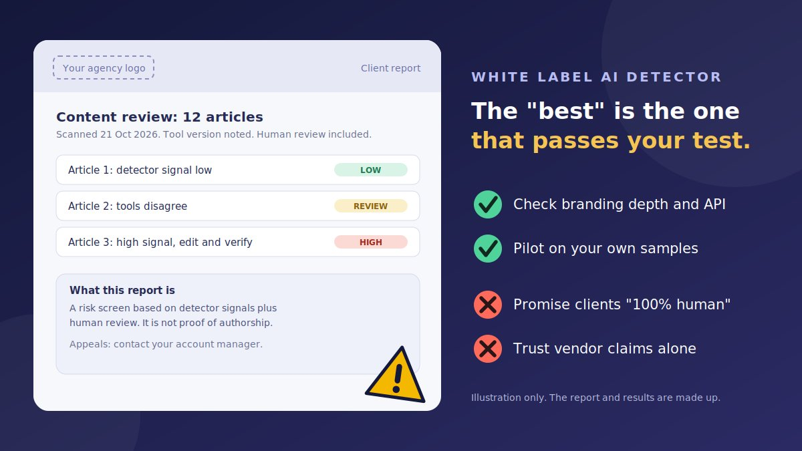

A client asks, "Can you guarantee this content is human-written?" You want to say yes, ideally with a polished report that carries your logo, not a vendor's. That is why agencies search for a white label AI detector. But "best" is a tricky word here. Detectors make mistakes, accuracy claims conflict, and the report you hand a client becomes your promise. This guide helps you choose a tool, test it fairly, and describe the results honestly.
What "white label" really means for an agency
Vendors use "white label" loosely. Before you compare tools, decide which level you need, because the differences are large.
| Level | What you get | Questions to ask |
|---|---|---|
| 1. Shareable or branded reports | Reports you can send to clients, sometimes with your logo and colors | Can I remove the vendor's name and logo? Can I edit the wording? |
| 2. Branded client portal | Clients sign in to a portal that carries your brand, possibly on your domain | Is a custom domain supported? Who owns the client accounts? |
| 3. API or white-labeled deployment | You build your own interface and the vendor works behind it | Are there rate limits? Do the terms allow reselling or embedding? |
| 4. Reseller or partner program | Wholesale pricing, billing, and a margin on what you charge | Minimum commitments? Who supports my clients? |
Comparison sites report that several well-known detectors sell API plans, including Copyleaks, Originality.ai, Winston AI, GPTZero, and Pangram, and that Copyleaks lists a white-labeled deployment option. Whether any vendor offers true white labeling with your branding throughout, and on what terms, changes over time. Treat anything you read here, or on any comparison page, as a lead, and get the details confirmed by the vendor in writing.
Why accuracy claims should not decide it alone
Most "best AI detector" pages rank tools by accuracy, and the numbers rarely agree. Vendors publish very high figures. Independent tests, and tests run by other companies, report lower numbers, especially on edited or paraphrased text, and they disagree on which tool has the fewest false positives. Many comparisons are produced by companies that sell a competing product, so no single ranking is a safe basis for a decision.
For an agency, the stakes are specific:
- A false positive can hurt a real writer. If your report wrongly labels a freelancer's genuine work, you may damage a relationship or a livelihood.
- A false negative can embarrass you. If a report says "low AI signal" and a client later finds AI text, your promise looks empty.
- Scores drift. Vendors update their models, so the same text can score differently next quarter.
- Different languages and styles behave differently. A tool that does well on English marketing copy may struggle with technical writing, short copy, or other languages.
That is why a pilot on your own samples, described below, matters more than any published ranking. For a plain-language explanation of what detector scores can and cannot tell you, see our guide to a free AI content detector for blog posts.
Vendors agencies often shortlist
These are the names that come up most often when agencies compare detectors. The notes are what comparison sites report, not endorsements, and features, limits, and prices change. Verify every row on the vendor's own site before you decide.
| Vendor | Often described as | Agency-relevant features reported | Check before buying |
|---|---|---|---|
| Copyleaks | Enterprise and multilingual | API with several SDKs, a white-labeled deployment option, wide language coverage, AI and plagiarism checks | What "white-labeled" covers, pricing model, and enterprise terms |
| Originality.ai | Content teams, publishers, and agencies | API, team management, full-site scans, shareable reports, AI plus plagiarism and readability in one workflow | Whether reports can be fully rebranded, credit usage, and how it treats polished human writing |
| Winston AI | Agencies and document screening | API, shareable PDF reports, OCR for scans and images, bulk pricing tiers | Depth of independent evidence, report branding options, and team features by plan |
| GPTZero | Sentence-level review and writing history | API and team plans, sentence-level highlights, authorship-style tools | Branding options, word allowances, and how it fits agency billing |
| Pangram | Low false-positive focus | API, independent benchmarks that emphasize few false flags, multi-language support | Reporting and branding features, volume pricing, and short-text performance |
The criteria that matter for an agency
- White-label depth. Logo, colors, wording, custom domain, hidden vendor name. Match the level to your promises to clients.
- API and automation. SDKs, rate limits, batch jobs, webhooks, and whether the terms allow you to embed the tool in your own platform.
- False-positive handling. How the vendor measures false positives, whether it publishes methods, and whether it supports appeals or re-checks.
- Your own accuracy evidence. What the tool does on your samples, in your languages and content types.
- Language coverage. Are the languages your clients use supported for AI detection, not only for plagiarism?
- Explainability. Sentence-level highlights and clear explanations help you discuss results with writers and clients.
- Team and client management. Seats, roles, client folders, audit logs, and the ability to separate one client's data from another's.
- Privacy and security. Data retention, whether submissions train models, a data processing agreement, where data is stored, two-step sign-in, and single sign-on.
- Pricing and margin. Credits, word packs, overage fees, minimum commitments, and annual lock-ins, against what you can charge.
- Reliability and support. Uptime history, support response times, and a service-level agreement if you depend on it.
- Version transparency. Does the report show the scan date and model version, so you can explain a changed score?
- Exit and portability. Can you export reports and data if you leave?
Vendor scoring matrix
Weigh the criteria that matter to you, score each shortlisted vendor from 0 (poor) to 5 (excellent) after your research and pilot, and the tool calculates a weighted total. It runs in your browser, and nothing you enter leaves this page. The scores are only as good as your evidence, so do not fill them in from a ranking page.
How to run a fair pilot
A short pilot on your own material tells you more than any ranking. Plan it before you look at any scores.
- Set your pass criteria first. For example, the maximum number of false flags you can tolerate on known-human text, and the minimum you need caught on known-AI text.
- Build a human set. Collect posts and articles you know were written by people, from several writers and topics. Include samples from non-native English writers, with their permission, since they face higher false-positive risk.
- Build an AI set. Generate texts with the AI tools your clients and freelancers are likely to use, on topics similar to your work.
- Build a mixed set. Include AI drafts that a person edited heavily, and human drafts polished with grammar tools, since real-world content is often mixed.
- Run every sample through every shortlisted tool, without looking at the labels, and record scores in a simple table.
- Check consistency. Scan the same text twice, on different days, and compare.
- Test edge cases. Short pieces, listicles, technical writing, and any languages you serve.
- Review the reports. Are they clear, brandable, and easy to explain to a client?
- Be honest about the sample size. A small pilot gives a rough signal, not a precise accuracy figure. Do not quote pilot numbers to clients as if they were proof.
How to position the service with clients
The way you describe the service matters as much as the tool. Detectors estimate likelihood, and no tool can prove who or what wrote a piece of text, so avoid promises you cannot keep.
| Avoid saying | Safer wording |
|---|---|
| "We guarantee 100% human content" | "We screen content for AI risk and add human review before delivery" |
| "Our detector is 99% accurate" | "We use detector signals as one input and explain their limits" |
| "This report proves the writer used AI" | "This report flags passages for human review" |
| "AI-free" | "Written and edited according to the agreed AI-use policy" |
Good practice for the contract and the report:
- Define your AI-use policy. What is allowed, what must be disclosed, and who decides.
- State the limits in the report. Say it is a risk screen, not proof, and that false positives and false negatives happen.
- Show the scan date and tool version, so a later change in score can be explained.
- Offer an appeals route. Writers and clients should be able to ask for a human re-review.
- Document your method. Which tools, how many, and what triggers a human review.
- Get legal advice on contract wording. This article is not legal advice.
Client confidentiality and data protection
When you scan client content, you send it to a third party. Before you do, check:
- Retention. How long does the vendor keep submitted text?
- Training. Are submissions used to train or improve models, and can you opt out?
- Contracts. Is there a data processing agreement, and does it cover sub-processors?
- Location and security. Where is data stored, and what controls protect it?
- Client permission. Do your client agreements allow third-party processing of their content?
- Unpublished and regulated content. Be extra careful with embargoed, legal, medical, or financial material.
Do not paste client content into free tools you have not vetted. Our guide on the free AI content detector for blog posts covers the privacy risks of free tools in more detail.
Red flags when choosing a white label vendor or reseller
- "100% accurate" or "undetectable" claims. No honest vendor can promise this.
- No named company, terms, or privacy policy.
- No way to test before paying, or pressure to buy a lifetime plan.
- Vague white-label promises that the vendor will not confirm in writing.
- Only vendor-run accuracy tests, with no method published.
- A reseller that hides which underlying detector it uses or who processes your data.
- Lookalike sites and extensions that copy a known detector's name. Check the address and publisher, and read our guide on the fake AI browser extension update scam before installing anything.
- Free-trial traps that ask for card details and make cancellation hard. Our guide on the fake AI subscription cancellation scam explains how to cancel safely.
Conclusion
The best white label AI detector for an agency is not a fixed name on a ranking page. It is a tool whose branding depth matches what you promise, whose terms fit your clients' confidentiality needs, and whose results hold up on your own samples. Decide what white label means for you, shortlist a few vendors, confirm the details in writing, run a fair pilot, and present the output as one signal in a human review process. That approach protects your writers, your clients, and your reputation.
Looking at a message or offer that seems suspicious for other reasons? Paste it into our free checker for a quick first read, or browse more guides on the Nofakey.ai blog.
Frequently asked questions
What is a white label AI detector?
It is an AI content detection service that an agency can present under its own brand. The depth varies: it may mean branded reports with your logo, a client portal on your own domain, or an API that lets you build your own interface while the vendor stays out of sight.
Is there one best white label AI detector for every agency?
No. The right choice depends on how deep the branding must go, your volume, languages, privacy requirements, and budget. Accuracy claims also conflict between vendors and independent tests, so the safest approach is to shortlist a few vendors and pilot them on your own samples.
Can an agency promise clients that content is 100 percent human-written?
It should not. AI detectors give probabilities, produce false positives and false negatives, and cannot prove how text was written. A safer promise is AI-risk screening combined with human review, with clear limits and an appeals process.
How should an agency test AI detectors before buying?
Build a set of known human texts, known AI texts, and edited or mixed texts, including samples from non-native English writers with their consent. Run them through each shortlisted tool, record the results, check false positives and consistency, and set pass criteria before you start.
Is it safe to send client content to a detector vendor?
Only after checking the vendor's terms. Ask about data retention, whether submissions are used to train models, data processing agreements, security controls, and where data is stored. Do not send confidential or embargoed client content to a service you have not vetted.
Got a message, offer, or page you want a quick first read on?
Run it through the checker